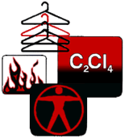

Drycleaning
 ShareCompartir
ShareCompartir

The commercial drycleaning industry in the United States consists of approximately 36,000 shops. Most of these shops are small businesses with fewer than 10 employees. Approximately 85% of drycleaning shops in the U.S. use perchloroethylene as their primary solvent.
NIOSH researchers have conducted numerous studies of the commercial drycleaning industry. Some of these studies have evaluated a variety of health and safety hazards; however the greatest emphasis has been placed on worker exposure to perchloroethylene. NIOSH research in this industry has involved exposure assessment, engineering control evaluations, and epidemiologic studies. Information concerning these studies is outlined below.
NIOSHTIC-2 Search
NIOSHTIC-2 search results on Drycleaning
NIOSHTIC-2
is a searchable bibliographic database of occupational safety and health publications, documents, grant reports, and journal articles supported in whole or in part by NIOSH.
NIOSH Publications on Drycleaning
Evaluation of 1-bromopropane Use in Four New Jersey Commercial Dry Cleaning Facilities
HETA-2008-0175-3111
On May 2, 2008, NIOSH received a technical assistance request from the NJ DHSS regarding potential health effects of 1-BP in drycleaners. NIOSH was asked to evaluate possible exposures and health effects among dry cleaner operators who used 1-BP. English [PDF - 3.7 MB] , Korean [PDF - 104 KB]
Control of Ergonomic Hazards in Commercial Drycleaning
DHHS (NIOSH) Publication No. 97-160 (1998)
Musculoskeletal disorders are caused by repetitive motions, awkward postures, excessive reaching, and precision gripping. In the drycleaning industry, ergonomic risks occur during garment transfer, pressing, and bagging. These activities, combined with a high work rate and frequency, may cause physical discomfort and musculoskeletal problems for workers. Disorders can include damage to tendons, muscles, nerves, and ligaments of the hand, wrist, arm, shoulder, neck, and back.
Control of Fire Hazards in Commercial Drycleaning Shops Using Petroleum-Based Solvents
DHHS (NIOSH) Publication No. 97-159 (1998)
Drycleaning shops contain all elements necessary for uncontrolled fires: fuels, ignition sources, and oxygen. Potential combustible materials include furniture, garments, lint, and portions of the building. The greatest risk of fire and explosion exists if the drycleaning shop uses a petroleum-based solvent in drycleaning machines. Approximately 10% of drycleaning shops in the United States use these highly flammable solvents. Ignition can be triggered by a burning or smoldering cigarette, heated equipment such as a press, a frictional spark inside the solvent reclaimer cage, or even static electricity within the reclaimer.
Control of Spotting Chemical Hazards In Commercial Drycleaning
DHHS (NIOSH) Publication No. 97-158 (1998)
Many hazardous chemicals are commonly used in drycleaning shops to remove garment stains. Workers performing stain removal may be exposed to these toxic chemicals through skin absorption, eye contact, or inhalation of vapors. The primary hazard is dermatitis from chronic or acute exposure. Dilute hydrofluoric acid, found in some products that remove rust stains, may cause severe chemical burns with deep tissue destruction that may not be evident until several hours after prolonged contact.
Control of Exposure to Perchloroethylene in Commercial Drycleaning (Ventilation)
DHHS (NIOSH) Publication No. 97-157 (1997)
To reduce exposure to drycleaning solvents, a comprehensive control approach should be followed involving engineering measures, work practices, and personal protection. Engineering measures are the preferred and most effective means of control and should generally considered first. One of the potentially least expensive engineering control options for reducing worker exposures to PERC involves effective ventilation.
Control of Exposure to Perchloroethylene in Commercial Drycleaning (Machine Design)
DHHS (NIOSH) Publication No. 97-156 (1998)
En Español
Drycleaning machines have evolved over time to better protect worker safety and health and the environment. Drycleaning machines encompass five "generations" which are currently used in the United States. Modern drycleaning machines can dramatically reduce exposures, save money in solvent costs, and permit easier compliance with safety, health, and environmental regulations.
Control of Exposure to Perchloroethylene in Commercial Drycleaning (Substitution)
DHHS (NIOSH) Publication No. 97-155 (1998)
En Español
If a substance is hazardous to health or to the environment, sound industrial hygiene practice dictates that a less hazardous material or process be considered as a substitute. In drycleaning there are a number of potential alternatives to using perchloroethylene.
Control of Exposure to Perchloroethylene in Commercial Drycleaning
DHHS (NIOSH) Publication No. 97-154 (1998)
En Español
To reduce exposure to drycleaning solvents, a comprehensive control approach should be followed involving engineering measures, work practices, and personal protection. Engineering measures are the preferred and most effective means of control and should generally considered first.
Control of Health and Safety Hazards in Commercial Drycleaners: Chemical Exposures, Fire Hazards, and Ergonomic Risk Factors
DHHS (NIOSH) Publication No. 97-150 (1998)
This report investigates control methods and technologies used in the drycleaning industry for reducing occupational exposures to tetrachloroethylene, also known as "perchloroethylene" (PERC). It also examines drycleaning machines that use petroleum-based solvents. It addresses methods for controlling exposures to spotting chemicals, fire, and ergonomic hazards in commercial drycleaning shops. Data were gathered during ten field surveys at drycleaning shops across the U.S. and through a World Health Organization (WHO) fellowship in Europe.
Worker Notification Program
Through the NIOSH Worker Notification Program , NIOSH notifies workers and other stakeholders about the findings of past research studies related to a wide variety of exposures. The links below present archival materials sent to participants in studies related to drycleaning.
Published Articles
Mortality and Endstage Renal Disease Incidence among Dry Cleaning Workers (2011)
An Evaluation of Retrofit Engineering Control Interventions to Reduce Perchloroethylene Exposures in Commercial Drycleaning Shops
(abstract--bibliographic information only)
(Applied Occupational Environmental Hygiene (In Press))
Real-time monitoring was used to evaluate the ability of engineering control devices retrofitted on two existing dry-cleaning machines to reduce worker exposures to perchloroethylene. In one dry-cleaning shop, a refrigerated condenser was installed on a machine that had a water-cooled condenser to reduce the air temperature, improve vapor recovery, and lower exposures. In a second shop, a carbon adsorber was retrofitted on a machine to adsorb residual perchloroethylene not collected by the existing refrigerated condenser to improve vapor recovery and reduce exposures.
Mortality in dry-cleaning workers: an update
(abstract--bibliographic information only)
(American Journal of Industrial Medicine (2001; vol. 39, pp. 121-132))
Background: A cohort of 1,708 dry-cleaning workers identified from union records, was exposed to perchloroethylene (PCE), a known animal carcinogen and probable human carcinogen, for at least one year before 1960. Many workers also had exposure to Stoddard solvent, a petroleum-based dry-cleaning solvent.
Concerns of the Dry-Cleaning Industry: A Qualitative Investigation of Labor and Management
(abstract--bibliographic information only)
(American Journal of Industrial Medicine (1999; vol. 35, pp. 112-123))
Occupational scientists agree there are hazards associated with dry-cleaning, but do dry-cleaning owners and workers concur? Knowledge of owners’ and workers’ perceptions can help guide intervention efforts to reduce worker exposure. To better understand these issues, a qualitative study was conducted using focus group methodology and constant comparative analysis. Two owner and four worker focus groups were held. Findings suggest that overall, health and safety issues were not of great concern. Owners were primarily concerned with the economic impact of regulations. Workers did express some anxiety about solvent exposure and burns, but most felt that these hazards were "just part of the job". Also, other than the installation of air-conditioning in the shops and the provision of health benefits, workers could not think of ways health and safety on the job could be improved.
Evaluation and Control of Perchloroethylene Exposures During Dry Cleaning
[PDF - 1 MB]
(abstract--bibliographic information only)
(Applied Occupational Environmental Hygiene (1996; vol. 11 (2) pp. 125-32))
A study was conducted at a large, commercial dry cleaner to evaluate the control of worker exposure to perchloroethylene (PERC) and provide recommendations to reduce exposure. This shop used a dry-to-dry machine that had a refrigerated condenser, which operated during the dry cycle, as the primary vapor recovery device. A small fan that was ducted to a carbon canister was the secondary vapor recovery device.
Links to Other Drycleaning Sites
EPA-Dry Cleaning Complaince Assistance
The dry cleaning sector includes establishments engaged in providing laundry services generally to individuals but also includes establishments operating as industrial launderers.
OSHA - Dry Cleaning
OSHA safety and health topic about dry cleaning containing many links to resources grouped under categories such as recognition, evaluation, control, compliance, training and more...
National Cleaners Association
information for both the consumer and professional cleaners and suppliers, including an FAQ, consumer reports, more...
Drycleaning and Laundry Institute International
Includes descriptions of the drycleaning process and other drycleaning-related topics.
Union of Needletrades, Industrial and Textile Employees
A textile union website.
Toxics Use Reduction Institute
The Massachusetts Toxics Use Reduction Institute (TURI) was created to promote reduction in the use of toxic chemicals and the generation of toxic by-products in industry and commerce in the state of Massachusetts.
- Page last reviewed: January 23, 2012
- Page last updated: January 23, 2012
- Content source:
- National Institute for Occupational Safety and Health Education and Information Division